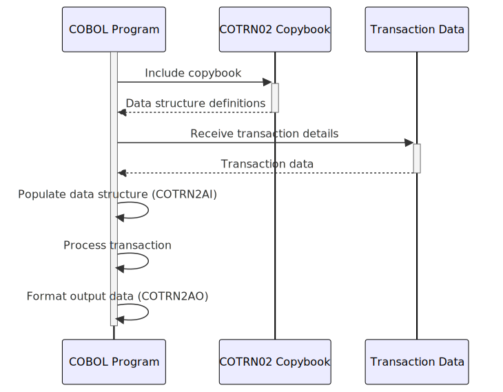

Gerado em: 1 de outubro de 2024
Descrição Resumida: Este documento descreve a estrutura dos dados relacionados às transações com cartão de crédito dentro da aplicação CardDemo. Ele define um formato padronizado para capturar e armazenar detalhes cruciais da transação, garantindo consistência e facilitando o processamento e a análise eficientes.
Histórias do Usuário: Como analista de dados, preciso garantir que todos os registros de transações usados em minha análise estejam completos e precisos, para que eu possa gerar relatórios e insights confiáveis.
Épico Relacionado: 4 - Processamento de Transações
Requisitos Técnicos:
COTRN02.CPY define duas estruturas de dados: COTRN2AI para entrada e COTRN2AO para saída.PIC) e comprimentos para garantir a integridade dos dados.TRNAMTL (Valor da Transação), são definidos usando COMP para fins computacionais.TRNNAMEI (Nome da Transação), usam PIC X para armazenar dados de texto.CURDATEI (Data Atual) e CURTIMEI (Hora Atual), são definidos como campos alfanuméricos com formatos específicos (por exemplo, YYYYMMDD para data).TTYPCDI (Código do Tipo de Transação) existem no sistema.REDEFINES para definir layouts de dados alternativos para os mesmos locais de memória.COTRN2AO redefine COTRN2AI para lidar com conversões de formato de dados para saída.Modelos Relacionados:
Transaction:
transactionName (String): O nome da transação (por exemplo, compra, reembolso).date (Date): A data da transação.time (Time): A hora da transação.activityId (String): Um identificador exclusivo para a transação.cardNumber (String): O número do cartão de crédito usado para a transação.transactionTypeCode (String): Um código que representa o tipo de transação.transactionCategoryCode (String): Um código que categoriza a transação.transactionSource (String): A origem da transação (por exemplo, online, POS).description (String): Uma descrição da transação.amount (Decimal): O valor da transação.originationDate (Date): A data em que a transação foi iniciada.processingDate (Date): A data em que a transação foi processada.merchantId (String): O ID do comerciante envolvido na transação.merchantName (String): O nome do comerciante.merchantCity (String): A cidade do comerciante.merchantZipCode (String): O CEP do comerciante.confirmationStatus (String): O status da transação (por exemplo, aprovada, recusada).errorMessage (String): Qualquer mensagem de erro associada à transação.Configurações:
Melhorias de Código:
Melhorias de Segurança:
Diagrama Conceitual:
–Made by “Smart Engineering” (by Compass.UOL)–